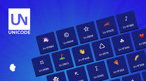
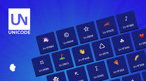

La codifica è il processo mediante il quale le informazioni vengono trasformate in una forma comprensibile e manipolabile da parte dei computer. Poiché i computer lavorano esclusivamente con segnali binari (0 e 1), tutte le informazioni — testi, immagini, suoni, numeri — devono essere convertite in sequenze binarie. Questa trasformazione si basa su concetti matematici e standard di rappresentazione chiamati codifiche.
La codifica dei caratteri è necessaria per rappresentare testo all’interno di un sistema informatico. Ogni carattere (lettera, numero, simbolo) è associato a un valore numerico che il computer può interpretare.
Il codice ASCII (American Standard Code for Information Interchange) è uno dei primi schemi di codifica dei caratteri. Utilizza 7 bit per rappresentare 128 simboli, tra cui lettere maiuscole e minuscole, numeri e simboli speciali. Esistono anche versioni estese a 8 bit (ASCII esteso) che permettono di includere caratteri accentati e simboli grafici.
Unicode è uno standard più avanzato e universale, capace di rappresentare oltre 1 milione di caratteri appartenenti a praticamente tutte le lingue del mondo, oltre a simboli matematici, emoji e caratteri speciali. Le principali implementazioni sono:
 
Le immagini digitali sono costituite da una matrice di pixel. Ogni pixel rappresenta un punto dell’immagine e contiene informazioni sul colore. Il colore è codificato numericamente attraverso vari modelli, tra cui il più diffuso è RGB.
RGB è un modello additivo che usa tre componenti: Rosso, Verde e Blu. Ogni colore ha un valore da 0 a 255. Un pixel è descritto quindi da una tripletta, es. RGB(0, 255, 0) per il verde puro. Esistono anche altri modelli come CMYK, HSL e YCbCr.


Un video digitale è una sequenza di immagini (frame) mostrate in rapida successione (es. 24 o 60 al secondo), spesso accompagnate da audio. A causa dell’enorme quantità di dati, viene applicata una codifica video che comprime i frame, riducendo la ridondanza spaziale (immagine) e temporale (tra fotogrammi).
I codec sono algoritmi che codificano (compressano) e decodificano (decompressano) i dati video.
Il contenitore video racchiude video, audio, sottotitoli, metadati:
.mp4: supporta H.264, molto diffuso..avi: vecchio formato, poco efficiente..mov: formato Apple, alta qualità..webm: formato moderno per il web.

L’audio analogico (suoni reali) viene convertito in digitale tramite campionamento e quantizzazione.
È il processo di misurazione dell’ampiezza del suono a intervalli regolari. Più è alta la frequenza di campionamento, maggiore è la fedeltà del suono. Standard:
Indica quanti bit rappresentano ciascun campione. Aumentare i bit consente una maggiore gamma dinamica:
MP3, AAC – alta compressione, perdita di qualità.FLAC, ALAC – qualità originale preservata.WAV, AIFF – file grandi, nessuna compressione.

I numeri devono essere convertiti in binario affinché il computer possa eseguire operazioni matematiche. Esistono vari modi per rappresentare diversi tipi di numeri.
Rappresentati in binario puro. Ogni numero è una sequenza di bit. Esempio: 13 in binario = 1101.
Per includere i numeri negativi, si usa la codifica in complemento a due, che permette di rappresentare valori positivi e negativi con lo stesso hardware.
Esempio: in 8 bit, +5 = 00000101, -5 = 11111011.
I numeri con la virgola vengono rappresentati tramite:
IEEE 754, consente di rappresentare numeri molto grandi o piccoli.#FF00FF).